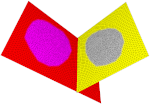
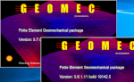
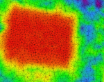

Geomec 5.7.1 contains several bug fixes. | ||
 |
Intermediate surfaces for double-sided faults (different discretizations) and stress mapping for improved results. | |
 |
From now on, multiple installations of Geomec can co-exist and run calculations. Compatible with one pre-5.7 installation. | |
 |
Mesh refinement for tetrahedron meshes using the CM2 meshing libraries. | |
| Visualization of input values from the parent model for well zoom-in and casing models. | ||